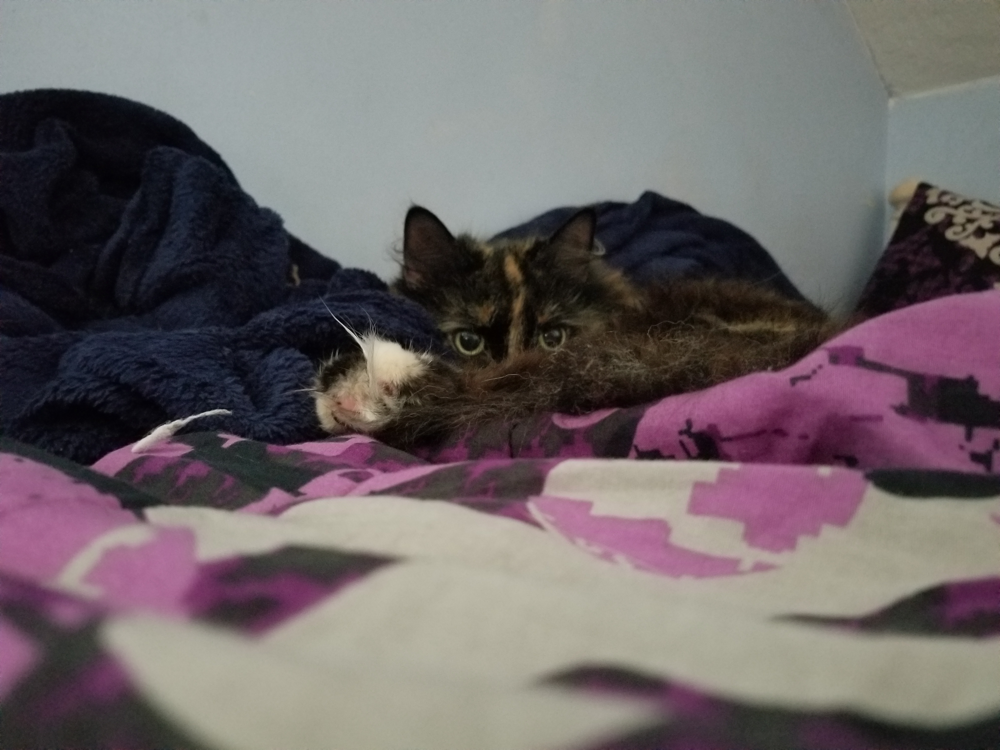
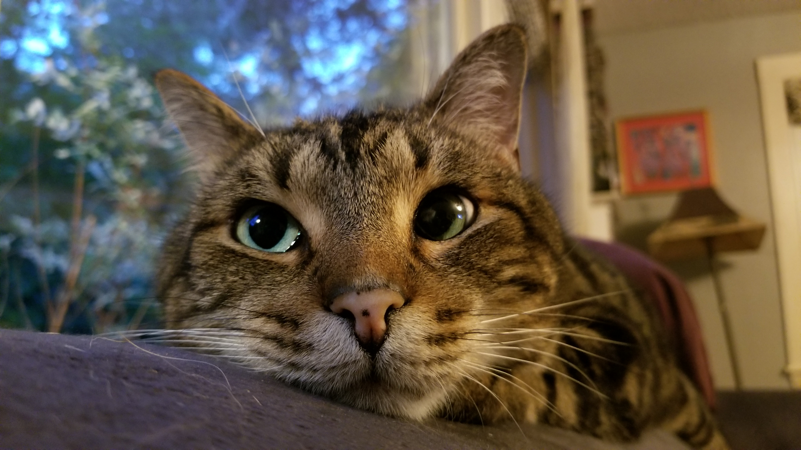
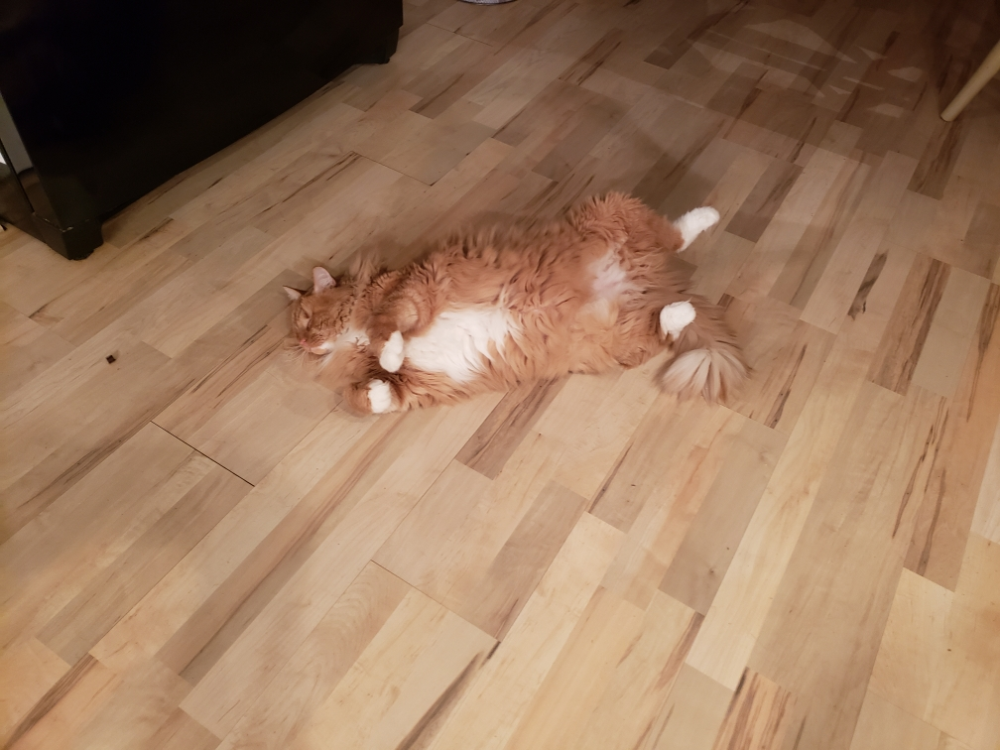

Hello, my name is Clara, and I am from Boston. As a true Bostonian, I am an avid member of Red Sox Nation, I have complete disregard for the speed limit, and no, I do not pahk my cah in hahvahd yahd, largely because Harvard yard is not a parking lot.
I am a cognitive science major with a focus in higher level mental processes: through this undergraduate degree, I hope to pursue a master's degree in human computer interaction.
In order to acheive this end, I work as a cognitve engineering intern and a research assistant in the psycholinguistics laboratory during the semester, and over the summer, I will be working in a computational neuroscience lab at Brookhaven National laboratory.
Outside of class, I love to bake, and a fan favorite of mine is my chocolate chip banana bread.
I also enjoy a very eclectic taste in music ranging from Senegalese pop, to Icelandic rock, to salsa. My love of music was spearheaded by my parents, who play for the Boston Pops and Boston Lyric Opera. While the musical genius skipped me, my brother does carry on the tradition by playing the saxophone.
Above all, I love my animals. The oldest cat is Cadpig, named after the runt of the litter born not breathing in 101 Dalmations. Our other brain damaged cat is Clark, who we found run over with both of his hips displaced and one leg not working. Our newest edition is a 25 pound blind cat with the meow of a 7 pound cat.
I also have two dogs, named Lottie and Dylan, who act like an old married couple and go to bed together under the covers every night at a rosey 6 PM.
Clara Cook



